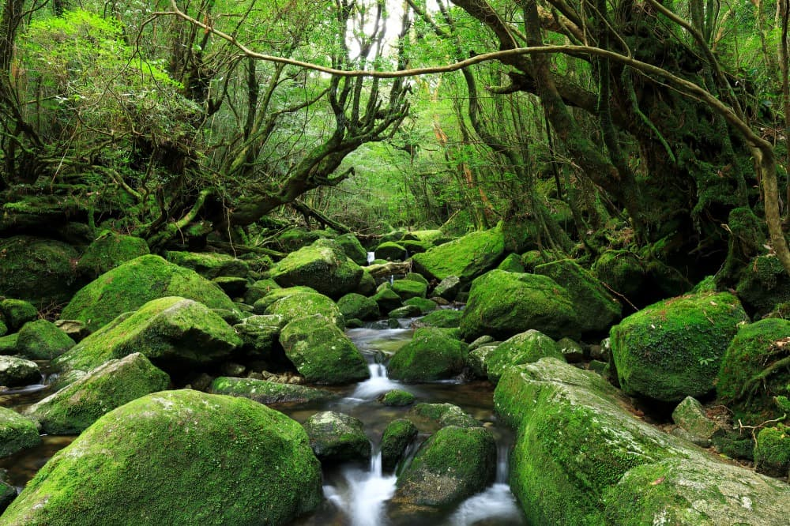
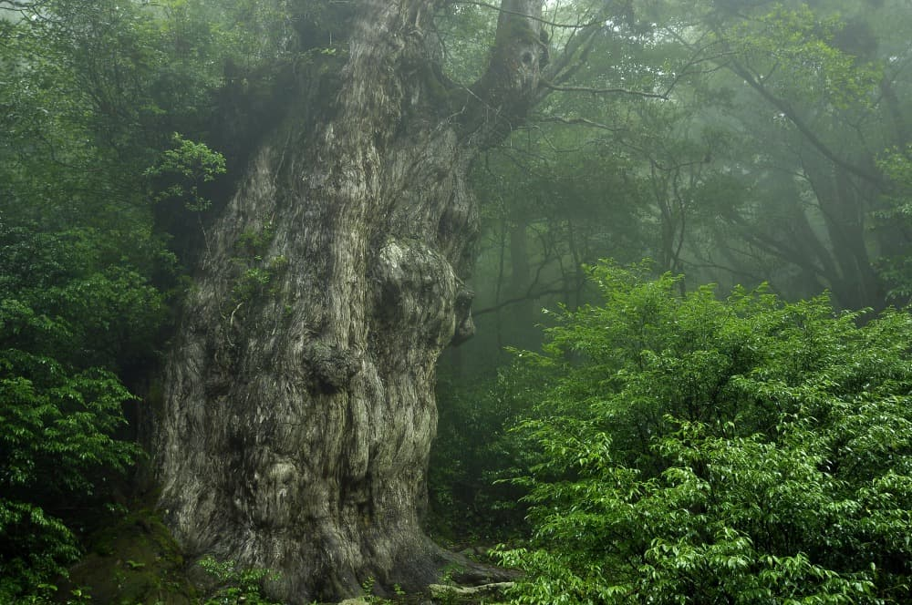
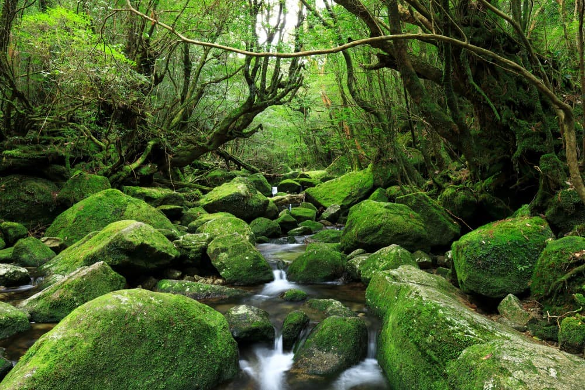
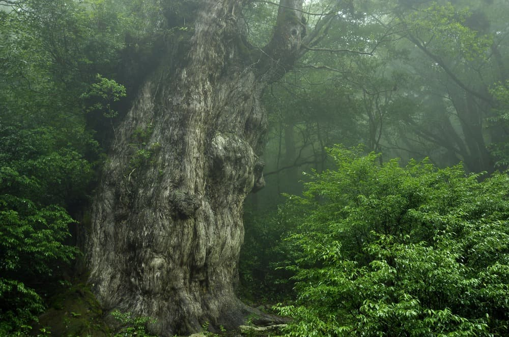

Yakushima(Japan)
 



Yakushima is a small island off the southern coast of Japan known for its dense forests, rugged terrain, and diverse wildlife. The island was the inspiration for the setting of the acclaimed Japanese animated film, Princess Mononoke, directed by Hayao Miyazaki. Visitors to Yakushima can explore the island's dense forests, hiking trails, and visit the Yakusugi Museum, which showcases the island's ancient cedar trees and unique ecology, as well as its connection to the production of Princess Mononoke. Yakushima's natural beauty, unique culture, and stunning landscapes make it a truly magical destination, captivating visitors from around the world with its enchanting atmosphere and mystical charm.